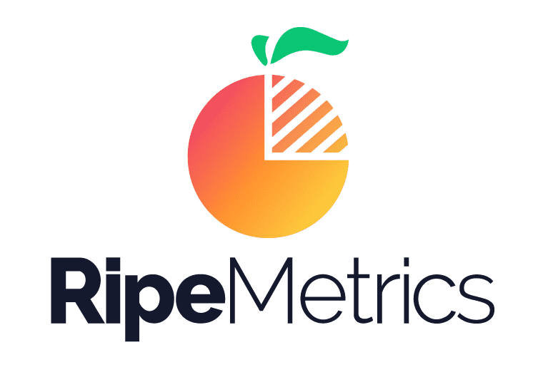

January 2023 - Present
Warren, Michigan

As a part of Vehicle Applications Integration team, support ad-hoc data requests by performing complex database queries across data sources such as Hive, Oracle SQL Developer and Microsoft SQL Server to extract data needed for solving production tickets.
➢ Also, works on Data Cleaning, Data Migration and reporting dashboards from MSBI Server and create Power BI Dashboards with interactive visualization reports by modeling data. Also, contributes in creating Python scripts for automating Power BI visuals and provides datasets for Alpha/Beta testing by identifying data patterns across datasets of the vehicle applications.
Technologies Stack - Python, SQL, Hive, Oracle Database, Power BI, Hadoop, Azure
January 2022 - May 2022
San Diego, California

➢ Performed Data Analysis on large customer datasets to extract concrete insights using advanced Python Libraries, make data-driven decisions, build & test Supervised and Unsupervised ML models.
➢ Used datasets to drive optimization and perform Data Cleaning & Preprocessing using Pandas, Numpy, Statistics and created effective and interactive data visualization charts in Tableau. Structureed data queries and data mining through MongoDB database.
➢ Created Product Recommendation Model using Scikit-learn, PyTorch and classified customers into discount groups using K-Means Clustering and Jupyter Notebook. Implemented Market Basket Analysis Model to create product baskets based on customer buying patterns using MySQL and Apriori Association Rules Algorithm. Architected and built data pipelines and batch jobs using Python and HDFS.
➢ Used AWS services like S3, Redshift, and Tableau for automating capturing, processing, analyzing and visualizing data developed SQL codes to process and update backend data in Amazon Redshift.
Technologies Stack - Python, SQL, Spark, Scikit-Learn, K-Means, SVM, MongoDB, HDFS, Jupyter, Tableau, PyTorch, Numpy, Pandas
July, 2021 - January 2022
Data Analysis & Digital
Media Assistant
SDSU Global Campus
San Diego, California
➢ Performed Data analysis using Python libraries, Database Monitoring & Management using SQL on the data gathered from digital media marketing campaigns of SDSU & visualized that data using Tableau to find students conversion ratio.
➢ Assisted in Paid Advertising Campaigns running on Google Ads & Facebook Ads to perform search term reporting & website exclusions and created detail documentation and reports with key findings and recommendation strategies for improving student activities to achieve goals.
➢ Performed descriptive statistics, trend line analysis, percentage point gap and proportion to evaluate student success metric using Advanced SQL, Python and ETL Data pipelines using Python, Airflow for Data extraction and Manipulation from Salesforce.
➢ Implemented & supported reporting and analytics infrastructure for internal business customers using AWS, services such Athena, Redshift and EMR.
Technologies Stack - Python, Google/Facebook Ads, Redshift, Tableau, MySQL, Hadoop, Athena, AWS
➢ Identified and translated customer requirements into detailed architecture and designed system, created APIs (using Flask) that can ingest and process data from various sources.
➢ Developed test scripts for automation and performed unit testing of APIs and other services. Implemented some python libraries for REST API command line interface. Also, devised an AWS Batch based architecture to parallelize analysis in the analytics tool, which will decrease python runtime scripting for data validation.
➢ Developed a backend application using Node.js and Express to handle requests from web clients. Also, developed highly scalable end to end application to process 70,000 real time requests per second (Even in the case when main frame servers are down).
➢ Ensured Unit, Integration tests, Code reviews, Continuous Integration & Deployment using Jenkins, Git and Agile Scrum practices for efficiency. Also, fixed issues, completed unit, regression and system test for web and desktop application ensuring consistency throughout development and improvement phases.
Technologies Stack - HTML5, CSS3, JavaScript, Angular, NodeJS, Git, Python, MySQL, MongoDB, Agile